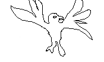

- documentary -
|
The Government assumes no responsibility for the accuracy of any material deployed on an unauthorized server. . production company films documentary at L'Anse aux Meadows August 25, 1999 (Tourism, Culture and Recreation) U. Throughout 2000, there will a large variety of activities to mark this important event in our history. The documentary research began recently in Iceland, and will continue in L'Anse aux Meadows from September 1 to 6, 1999. |
|
See the DocuSeek participating disributors page for more information on any of the distributors. . DocuSeek is a search site for independent documentary, social issue, and educational videos. DocuSeek allows you to simultaneously search several leading film distributors' complete collections, representing the highest quality documentary and instructional media, films and videos available. Search for videos Enter key words to search on, then click the Find Titles button. |
. The next time Cooder travelled to Cuba, Wenders accompanie d him with a small film crew, observed the musicians in the studio and traced th eir lives in Havana and also shot the only concerts given by the "Buena Vista Social Club" in Amsterdam and in, their triumphal success in the legendary Carnegie Hall. The documentary, a purely German production has become the most successful Germa n movie world wide in 1999. Buena Vista Social Club was sold to more than 50 ter ritories in the world. In the UK Buena Vista Social Club has now become the most successful documentary of all time.
|
|  |
At the same time programme makers are increasingly concerned about the drop in advertising revenue which has affected the commercial channels and the knock-on effect that the fight for ratings is having on the BBC. It is thought that human rights issues and investigative documentaries are being increasingly marginalized and are difficult to get commissioned. As an independent voice in the broadcasting world, it is the School's responsibility to the students of the world's premiere documentary department to debate the pertinent question of the economics behind British Television's social conscience which weighs heavily on the future of documentary making. Nick is a documentary film-maker himself and is widely respected as a commissioning editor. Roger Graef is a documentary filmmaker and an expert of the penal system. |
also look at: http://www.documentaryfilms.net/